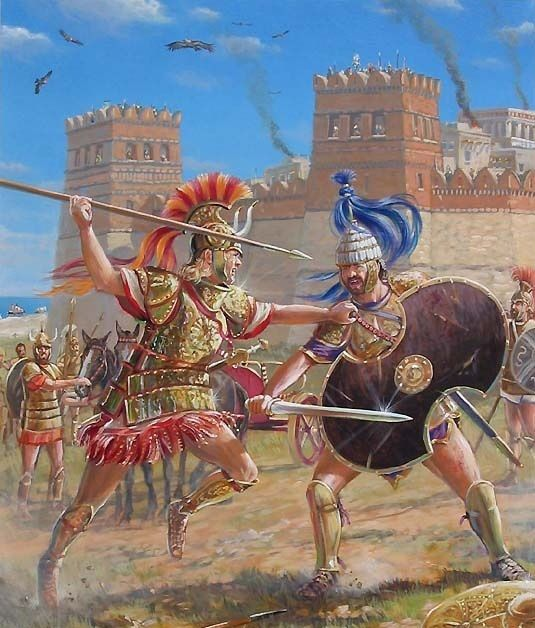

Man’s self image and emotional self-worth is found in crushing our enemies, seeing them driven before us, and hearing the lamentation of the women. Remember that time that Homer was one of the earliest pieces of literature in Western civilization?

Not toxic, Just masculinity.
Masculinity is strength. To call it toxic is to desire weak, ineffective men who cannot resolve their own issues.
>Illiad as a source of men of strength Achilles mopes like an emo and Ajax literally tosses himself onto his sword because he didn’t get good loot.
Hilariously trads and the Tumblr branch of feminism hate the fuck out of dudes who actually try to open up and resolve their issues, characterizing them as weak and whiny. You desire dudes to be repressed, emotionally stunted mongs who just nod along to your schizo politics.
I’m sure that attitude exists, probably in force – no movement is a monolith, the internet is a weird and wild place, etc. – but that’s honestly not what I’ve seen from the trads.
The more enlightened ones tend to take a stance like “you should make sure that you can entrust the whole of your heart and soul, including all your vulnerabilities and doubts, to your lawfully wedded wife; and you should make sure that you are prepared for her to entrust the whole of her own heart and soul to you.” Which may be a little heavy on the relying-on-one-specific-person for some folks’ tastes, but it’s a far cry from “men shouldn’t have feelings, those are for women/babies/fags.”
The…other ones…tend to take a stance like “WICKED DECEITFUL FEMINISTS want you to JUST SHUT UP AND SUFFER AND DIE rather than EVER BURDENING ANYONE WITH YOUR PROBLEMS because they hate white men and anything you might conceivably need will be called ‘emotional labor’ or ‘oppression’ or some shit, so you should definitely STICK IT TO THE DEGENERATE MODERN MATRIARCHY by being as EMOTIONAL AND NEEDY AS IS DAMN WELL APPROPRIATE FOR YOUR SITUATION.” Which is actually a totally reasonable stance once you strip out all the tribal-oppositional fnords.
Honestly, I think the “real men don’t have feelings” thing is essentially part of Unconsidered Basic Normie Ideology, and anyone who goes to the effort of being weird in any direction is likelier than average to break out of it.